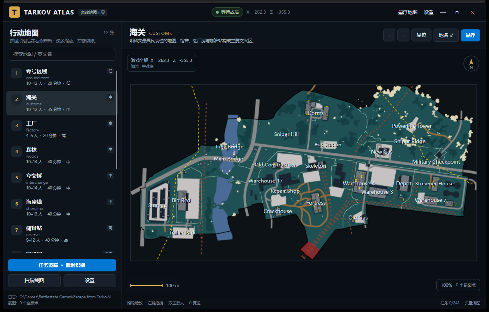
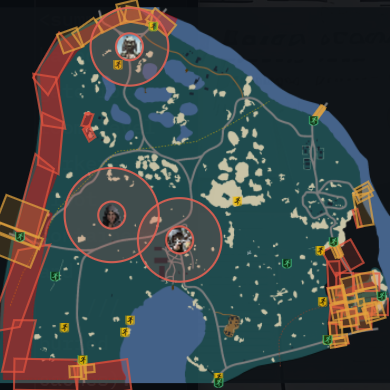
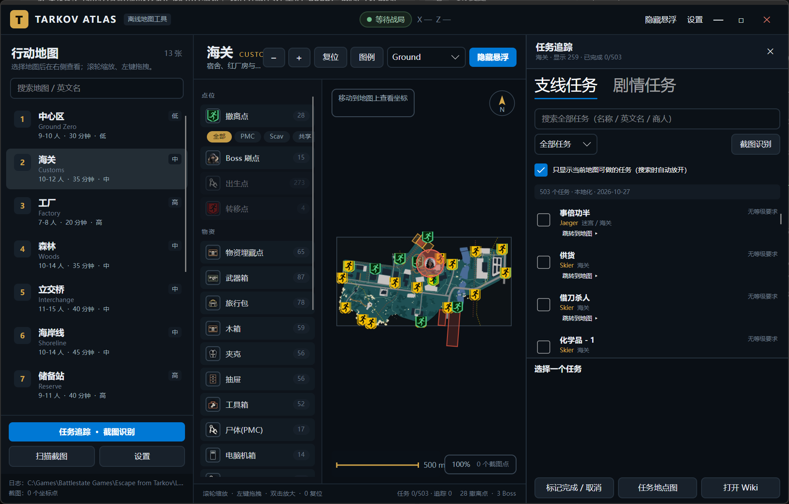
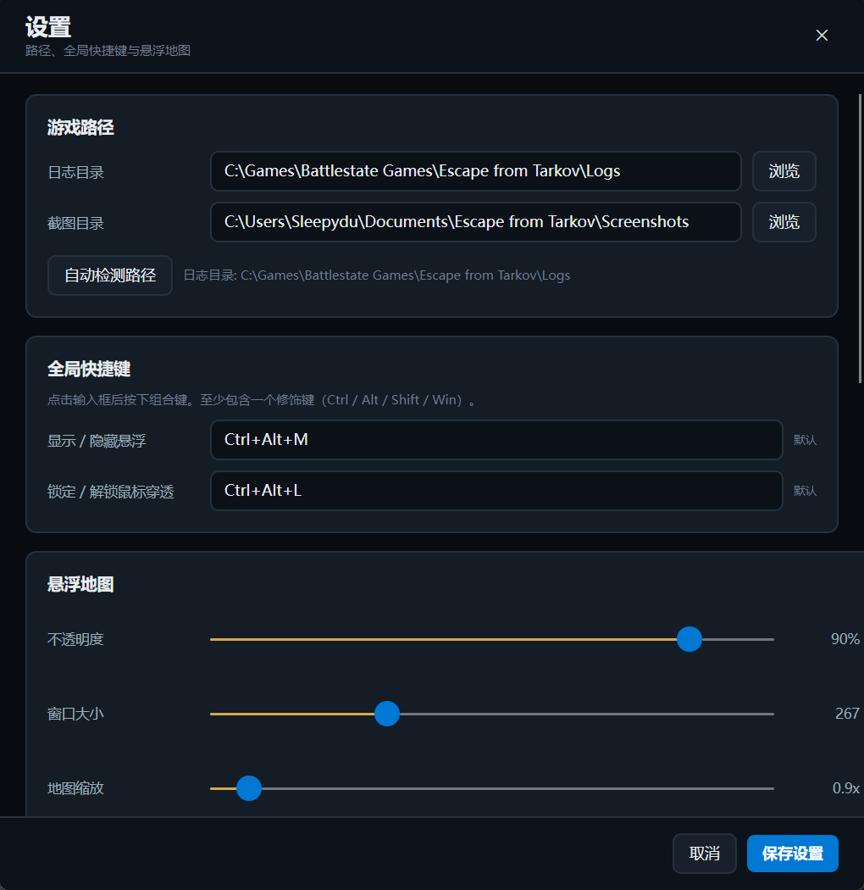

副屏地图？
一个悬浮窗就够了。
Tarkov Atlas 是一块不遮挡游戏的离线战术地图：撤离点、Boss 刷点、雷区、物资、 这一局该做的任务，全部标在图上。游戏里截一张图，位置与楼层自动就位——零窗口切换。


上北下南 · 52 个楼层
官方中文名 · 搜索直达
点「前往」即达
不向任何服务器发数据
为「正在打游戏的我」设计的每一样东西
所有标记逐项可开关；所有操作都为副屏场景重新想过——不是把网页地图塞进窗口。
截图即定位
游戏内截一张图，坐标 · 楼层 · 朝向自动解析。不用 alt-tab——箭头已经在图上了。
战局自动识图
监听游戏日志识别当前战局地图，进入海关就自动切到海关。你只需要打游戏。
任务标在图上
468 条离线任务，搜中文名秒出结果；「前往」一键落到目标点位，255 个任务的随包攻略图随手可查。
楼层自动跟随
工厂三层、实验室三层、破冰船十六层——按玩家高度自动切到所在楼层，也可手动锁定。
Boss 与危险区
Boss 头像 + 巡逻范围圈，雷区/狙击区红色危险面。数据跟随游戏版本持续修正。
为副屏而生
无边框悬浮窗：左键拖图、右键拖窗、滚轮光标锚缩放；主窗口最小化到托盘，常驻不碍事。
截图即定位——全片的这一帧
这是 Tarkov Atlas 与所有网页地图的本质区别：定位发生在你按下截图键的那一刻，而不是你打开浏览器之后。
0.8 秒内完成
600ms 目录轮询 + 台账 diff，截图写入完成前定位就开始；金色箭头、所在楼层、朝向一并就位。
零学习成本
没有「先点这里再点那里」的流程。你唯一要做的事——像平时一样截图。
三步，然后忘掉它的存在
没有登录、没有配置向导、没有要常驻的浏览器标签页。
解压并运行
下载 zip，解压整个目录，运行 TarkovAtlas.exe。原生 AOT 构建，不装 .NET 运行时。
指一下游戏目录
设置里指到 Escape from Tarkov 的 Logs 与截图目录——一次性的事，之后它自己盯着。
去打游戏
悬浮窗常驻副屏或角落。进战局自动切图，截图自动落点，忘了它在运行才说明它成功了。
界面速览
任务追踪、主地图、设置——都是同一套克制的设计语言。


常见问题
需要管理员权限？
是。全局热键与游戏目录读取需要提权，首次运行 Windows 会弹 UAC 确认。
会被封号吗？
工具只读取本地日志与截图文件名，不注入、不修改游戏进程，不联网。请勿用于雷达等作弊用途——那是明确禁止的。
支持哪些地图？
13 张：中心区、海关、工厂、森林、立交桥、海岸线、储备站、实验室、灯塔、街区、迷宫、码头、破冰船。
怎么卸载？
删掉解压目录即可，干净无残留；进度保存在 %APPDATA%\TarkovAtlas，一并删除即完全清除。